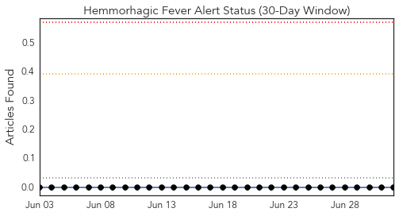
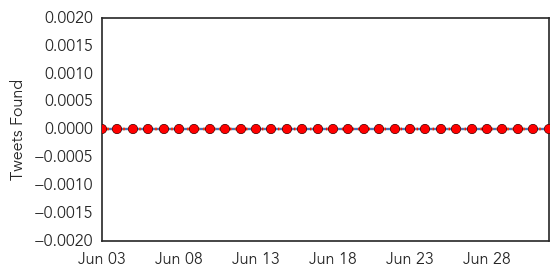
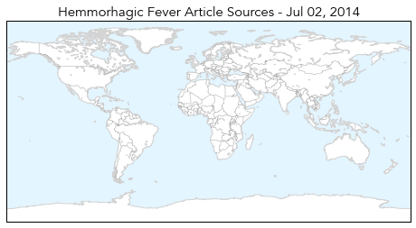
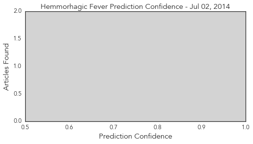
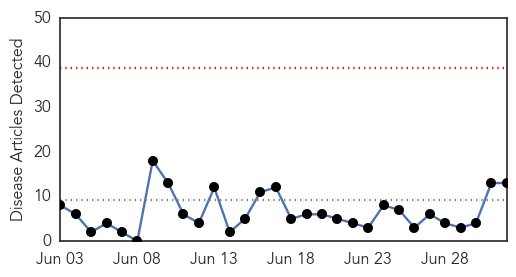
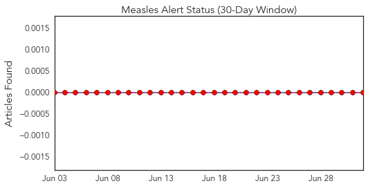
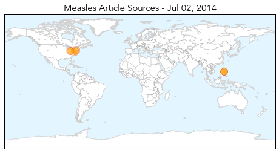
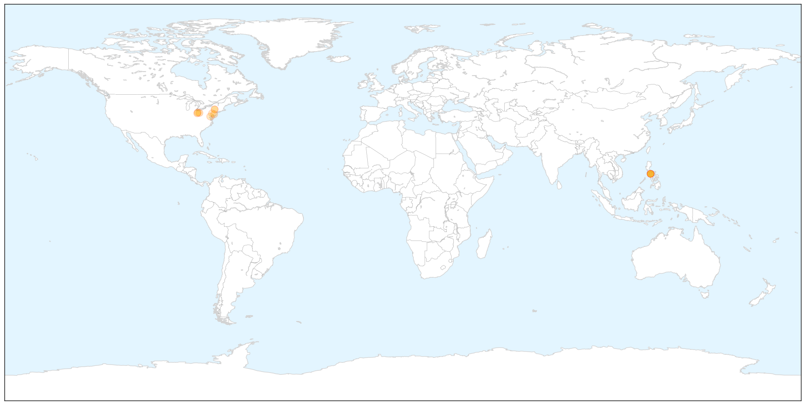
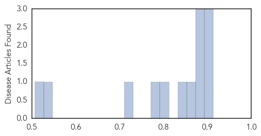

Hemmorhagic Fever
30-Day Web Trend
0 alerts, 0 warnings

30-Day Twitter Trend
0 alerts, 0 warnings

Article Locations

Article Confidences
Top Articles:
-
No articles found for Jul 02, 2014
Top Tweets:
-
No tweets found for Jul 02, 2014
Measles
30-Day Web Trend
0 alerts, 0 warnings

30-Day Twitter Trend
0 alerts, 0 warnings

Article Locations

X

Article Confidences
Top Articles:
- 0.914
- Vaccination outreach tries to curb Amish measles outbreak
- 0.895
- Disease hits Amish community
- 0.894
- Amish events may be marred by measles
- 0.879
- Measles outbreak complicates 2 big Amish events
- 0.878
- Measles outbreak complicates 2 big Amish events
- 0.877
- Measles outbreak complicates two big Amish events
- 0.857
- Measles outbreak complicates 2 big Amish events
- 0.836
- Study finds vaccine side effect extremely rare
- 0.804
- Measles outbreak complicates Amish events
- 0.780
- Measles outbreak raises urgency
- 0.721
- Pa. health officials on alert as Amish measles outbreak spreads
- 0.529
- Vaccine Doses Increase for New York Students
- 0.507
- Vincennes Sun-Commercial: News
Top Tweets:
-
No tweets found for Jul 02, 2014